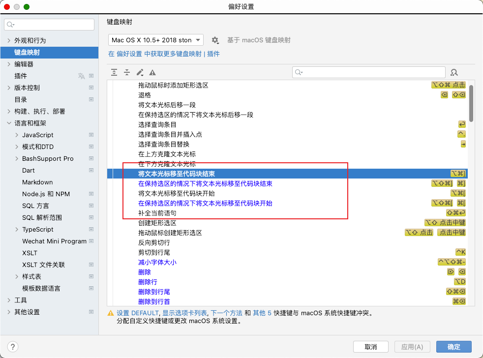
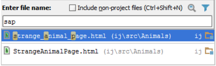
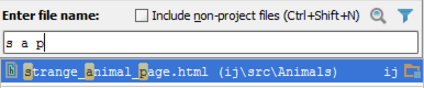
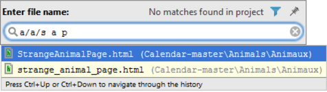
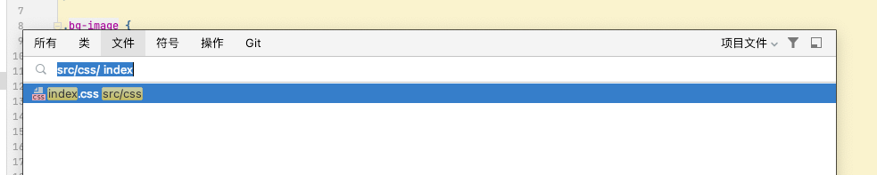
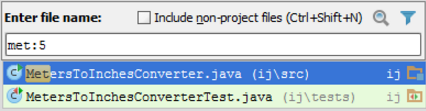
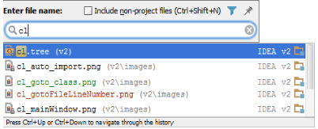
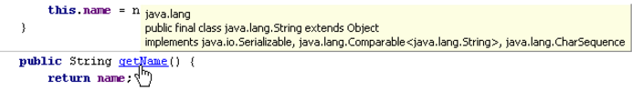
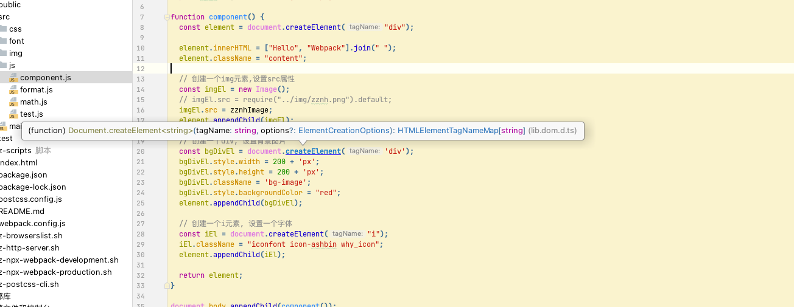

@(工作笔记)
webstorm-record
[TOC]
console.log('hello vue3')
IntelliJ IDEA 导航到大括号
导航到代码块的边框
若要导航到代码块的边框，请执行下列操作之一:
要导航到代码块的开始，请按 Ctrl+Open Bracket，并在代码块内的任何位置使用插入符号。
插入符号跳转到当前代码块的开头大括号。
要导航到代码块结束，请按 Ctrl+Close Bracket ，并在代码块内的任何位置使用插入符号。
插入符号跳到当前代码块的关闭括号。
要在代码块的开始或结束之间切换，请按 Ctrl+Shift+M。
您还可以在任何地方调用此操作 (将插入符号移动到匹配的大括号)，或转到操作功能：

IntelliJ IDEA按名称导航到类，文件或符号
提示与技巧
在“导航”弹出窗口中工作时，请使用以下有用的技术：
通过选择要在其中进行搜索的文件类型缩小搜索范围。只需单击过滤器 ，并清除您不感兴趣的文件类型旁边的复选框。
将非项目文件包含在查找列表中，从而提供 SDK 和库中的匹配文件。
如果查找列表太长，请输入更多字符以缩小它，或单击列表末尾的省略号，以显示其下一部分。
键入 CamelHumps 名称的初始字母，例如：

请注意，IntelliJ IDEA 自动识别 CamelHumps 并将它们与小写字母进行匹配。
输入用空格分隔 snake_case 名称的任何字母，例如：

在 "导航到文件" 弹出窗口中，键入用斜杠分隔的字母以表示嵌套目录：


在文件名后面输入行号，用冒号分隔，以导航到指定的行：

使用 * 通配符来表示任意数量的字符，尽管只需键入位于所需名称中间的字符即可。
如果在 "导航到类/文件/符号" 弹出窗口中键入一个，您会发现您需要另一个，只需调用必要的对话框。您已经输入的文本将不会消失。
按 Alt+F1 来调用 "选择目标" 弹出窗口，并选择所需的IDE组件。
请注意，对于版本控制下的项目，查找列表中的条目是根据其状态进行颜色编码：

当有一个独立的编辑器框架与一个特定的文件，你可以选择通过按下 Enter 键打开主 IntelliJ IDEA 的框架文件，或通过按 Shift+Enter 键来激活分离的框架。
导航到符号的类型声明
在编辑器中将插入符号放在所需的符号上。
执行以下操作之一：在主菜单上选择：导航| 类型声明（Navigate | Type Declaration）。按 Ctrl+Shift+B。Windows 和 Linux 用户按 Ctrl+Shift 或 MacOS 用户使用 ⌘+⇧ 键，并将鼠标悬停在符号上。当符号变为超链接时，单击它而不释放 Windows 和 Linux 用户的 Ctrl + Shift 或 MacOS 用户使用的 ⌘+⇧ 键。在编辑器中打开符号的类型声明。您还可以在工具提示中查看声明，同时保留对 Windows 和 Linux 用户的 Ctrl+Shift 或 MacOS 用户按下 ⌘+⇧。

